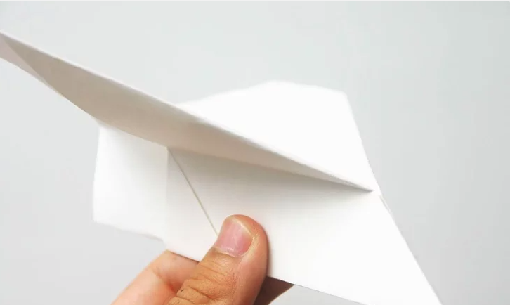

BY CLICKING ON "MY GIT HUB PAGE" YOU CAN GET AMAZING PROJECTS MADE BY ME
1: Make sure the short side of the paper is facing you. Fold it in half lengthwise.
2: Fold the top edges so they are aligned with the center.
3: Fold the top point down to the bottom edge and crease it.
4: Fold the top edges, so they are aligned with the middle.
5: Fold the little tab in the middle up, making a lock.

6: Fold it in half lengthwise.
7: Fold wings.
8: Finish! For a good flight, throw it up as hard as you can.